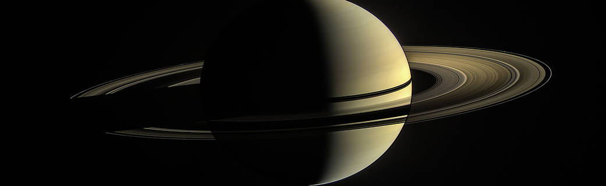

Saturn’s Rings: Young and Ephemeral, Three NASA Ames Studies Say
어떤 인간도 고리가 없는 토성을 본 적이 없지만, 공룡 시대에 행성은 아직 상징적인 액세서리를 얻지 못했을 수 있으며 미래의 지구 거주자들은 고리가 없는 세상을 다시 알게 될 것입니다.
캘리포니아 실리콘 밸리에 있는 NASA Ames 연구 센터 과학자들의 최근 세 가지 연구는 NASA의 카시니 미션 데이터를 조사하고 토성의 고리가 젊고 일시적이라는 증거를 제공합니다. 물론 천문학적 용어입니다.
새로운 연구는 고리의 질량, "순도", 들어오는 파편이 얼마나 빨리 추가되는지, 그리고 그것이 시간이 지남에 따라 고리가 변하는 방식에 어떤 영향을 미치는지 조사합니다. 이러한 요소를 종합하면 해당 요소가 얼마나 오래 있었는지, 남은 시간을 더 잘 알 수 있습니다.
고리는 거의 전적으로 순수한 얼음입니다. 질량의 몇 퍼센트 미만은 모래 알갱이보다 작은 소행성 파편과 같은 미세 유성체에서 나오는 얼음이 아닌 "오염"입니다. 이들은 지속적으로 고리 입자와 충돌하고 행성 주위를 도는 물질에 파편을 제공합니다. 과학자들이 이 폭격이 얼마나 오래 지속되었는지 계산하기 위해 아직 정량화하지 않았기 때문에 고리의 나이를 정확히 파악하기가 어려웠습니다.
이제 세 가지 새로운 연구 중 하나는 얼음이 아닌 물질의 총 도착률과 고리가 형성된 이후 얼마나 많이 고리를 "오염"시켰어야 하는지에 대한 더 나은 아이디어를 제공합니다. 볼더(Boulder)에 있는 콜로라도 대학(University of Colorado)이 주도한 이 연구는 또한 과학자들이 생각한 것만큼 미세 유성체들이 빠르게 들어오지 않는다는 것을 보여줍니다. 이러한 일련의 증거는 토성과 태양계의 나이가 46억년에 불과한 극히 일부인 수억 년 이상 동안 고리가 이 우주 우박 폭풍에 노출될 수 없었다는 것을 말해줍니다. .
이 결론을 뒷받침하는 것은 Ames가 이끄는 두 번째 논문 으로, 작은 우주 암석에 의한 고리의 지속적인 타격에 대해 다른 각도를 취합니다. 이 연구의 저자들은 연구에서 크게 간과되어 온 두 가지 사항을 확인했습니다. 구체적으로, 그들은 고리의 장기적인 진화를 지배하는 물리학을 살펴보고 두 가지 중요한 요소가 미세 유성체 폭격과 이러한 충돌로 인한 파편이 고리 내에 분산되는 방식이라는 사실을 발견했습니다. 이러한 요소를 고려하면 고리가 불과 수억 년 만에 현재 질량에 도달할 수 있음을 알 수 있습니다. 결과는 또한 그들이 너무 어리기 때문에 토성의 시스템 내의 불안정한 중력이 얼음 위성 중 일부를 파괴했을 때 형성되었을 가능성이 높다는 것을 시사합니다.

Ames의 연구원이자 최근 논문 중 하나의 공동 저자인 Jeff Cuzzi는 "토성의 상징적인 주요 고리가 우리 태양계의 최근 특징일 수 있다는 생각은 논란의 여지가 있습니다. 그러나 우리의 새로운 결과는 이 발견을 피하기 어렵게 만드는 카시니 측정의 삼중주.” Cuzzi는 또한 토성의 고리에 대한 카시니 미션의 학제간 과학자로 활동했습니다.
그렇다면 토성은 현재 모습을 채택하기까지 약 40억 년이 더 지났을 것입니다. 그러나 오늘날 우리가 알고 있는 아름다운 반지를 자랑하는 데 얼마나 더 오래 걸릴 수 있습니까?
카시니 임무는 가장 안쪽 영역의 물질이 행성으로 떨어지기 때문에 고리의 질량이 빠르게 감소하고 있음을 발견했습니다. 마찬가지로 인디애나 대학이 주도한 세 번째 논문은 고리 물질이 이 방향으로 얼마나 빨리 표류하는지 처음으로 정량화했으며, 유성체도 역할을 합니다. 기존 고리 입자와의 충돌과 그 결과로 생긴 파편이 바깥쪽으로 던져지는 방식이 결합하여 고리 물질을 토성 쪽으로 운반하는 일종의 컨베이어 벨트를 생성합니다. 연구자들은 입자들이 결국 행성에서 사라지는 것이 무엇을 의미하는지 계산함으로써 토성에 대한 힘든 소식에 도달했습니다. 그것은 향후 수억 년 안에 고리를 잃을 수 있다는 것입니다.
Ames의 연구원이자 세 연구 모두의 공동 저자인 Paul Estrada는 "이 결과는 이 모든 외부 파편에 의한 지속적인 폭격이 행성 고리를 오염시킬 뿐만 아니라 시간이 지남에 따라 감소시켜야 한다는 것을 말해주고 있다고 생각합니다."라고 말했습니다. “아마도 천왕성과 해왕성의 작고 어두운 고리는 그 과정의 결과일 것입니다. 상대적으로 무겁고 얼음이 많은 토성의 고리는 젊음을 나타냅니다.”